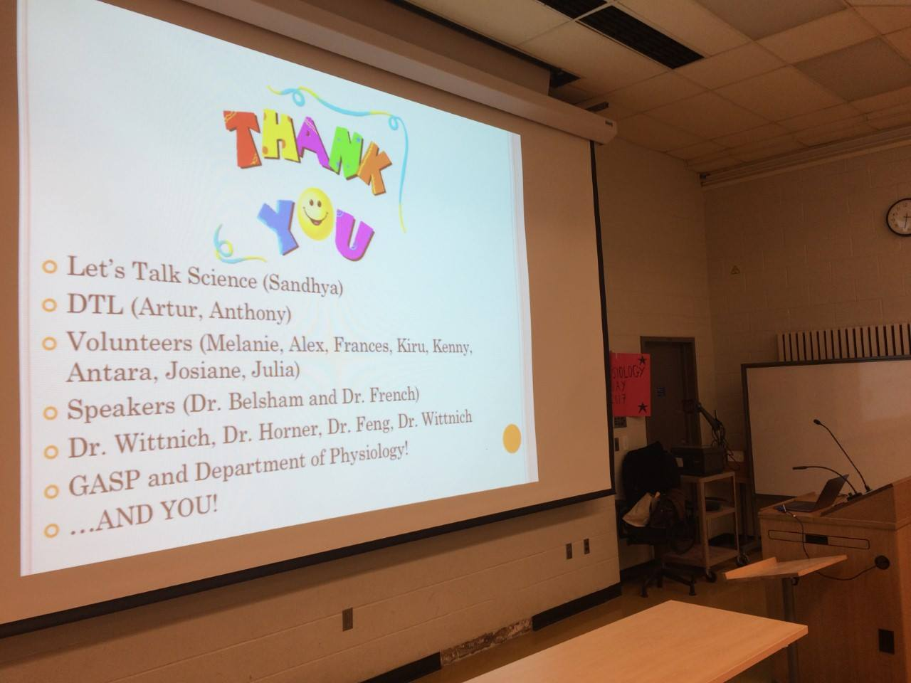

June 2017 Pub Night #if a post is pinned to the top, put a Pushpin icon next to title
June was GASP's last pub night until the fall. A BIG thank you to our social coordinators, Kenny and Scott, for the great selection of pubs this year. We hope everyone had a great time, and can't wait to see you back at pub night in the fall.
more ...High Park Trails #if a post is pinned to the top, put a Pushpin icon next to title

SRV2017 #if a post is pinned to the top, put a Pushpin icon next to title
Science Rendezvous is an annual event, where science is taken out of the labs and put on the street, educating and inspiring the general public about STEM. It is a great opportunity to make science fun, awhile increasing awareness and appreciation of what science can do. On May 13th, PSL graduate students showcased human physiology, while incorporating the theme, which highlighted Canadian scientific discoveries over the past 150 years. A special thank you to Farwah, the Science Rendezvous Coordinator on GASP, and her team for organizing a great event, as well as all the volunteers who spent the day teaching everyone how awesome physiology is.


June Pub Survey #if a post is pinned to the top, put a Pushpin icon next to title

FIP2017 #if a post is pinned to the top, put a Pushpin icon next to title


Scarborough Bluffs #if a post is pinned to the top, put a Pushpin icon next to title

Sharks After Dark #if a post is pinned to the top, put a Pushpin icon next to title

Presentations 101 #if a post is pinned to the top, put a Pushpin icon next to title
Let's Talk Science 2017 #if a post is pinned to the top, put a Pushpin icon next to title
On Thursday, April 13th, GASP, in collaboration with Let's Talk Science, invited Gr.11 students from across the GTA to learn about human physiology. These students were taught about the cardiovascular system, the respiratory system, and genetics. It was a huge success! A big thank you to Ashkan, GASP's Let's Talk Science Rep, for organizing this successful event, as well as the PSL grad students (Frances, Antara, Kiru, Julia, Josiane, Kenny, Alex, and Melanie) who spent the day teaching the students all about human physiology.

more ...